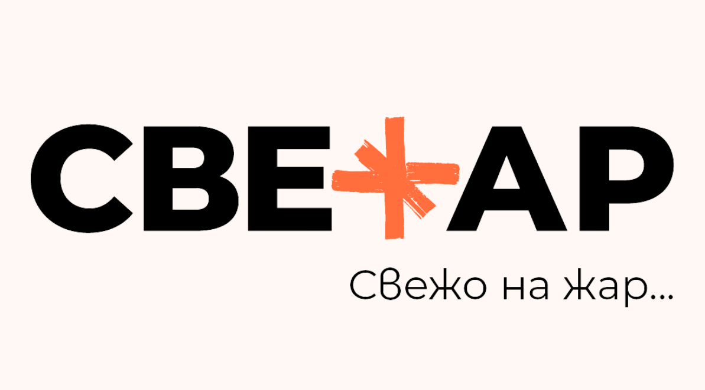
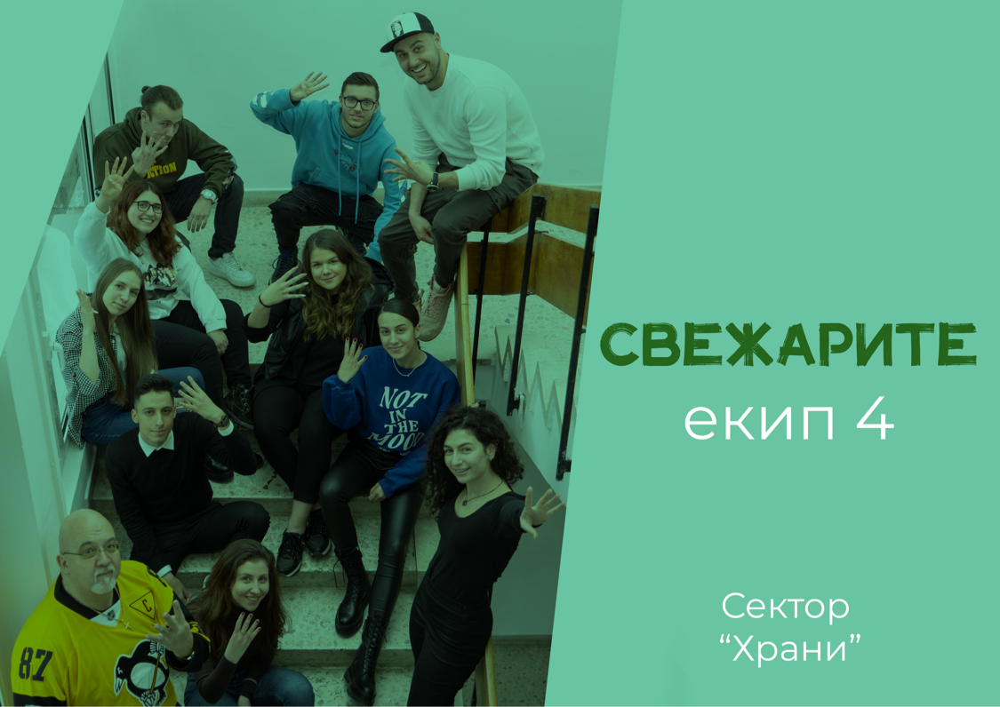

Рекламна академия 2022 - СВЕЖАР
Екип: Даниел Каменов, Ивана Димова, Ивана Сливкова, Методи Митков, Николета Христова, Йоанна Славская, Кристиян Петров, Мони Неделчева, Наталия Лазарова
Описание: Нова компания на българския пазар, стартираща производство на месни продукти приготвени изцяло на растителна основа. Създаване на компания, проучване на пазара, създаване на продукти, визии и телевизионен спот. Проект за Рекламна академия 2022 – сектор храни.
Роля: Основната ми роля в проекта беше да проучвам пазара, да следя работния процес, както и да помагам на криейтив екипа при нужда (търсене на информация или ресурси). Участвах активно и в създаването на телевизионния спот (видеообработка, търсене на визуализации и тн).
Бриф: Нова компания, целяща да създава здравословни храни със страхотен вкус. 100% веган, лесни за приготвяне и релевантни продукти спрямо глобалните трендове.
Конкуренти: Beyond Meat, g-burger, Rocket Food
Предварително проучване (чрез анкета): "Кое за Вас е най-важното в такъв тип продукт?" - 70.2% казват състава, 27.7% казват вкуса и останалите избират визията.(386 отговора)
"Бихте ли купили веган кюфтенца за бургер в бъдеще?" - 90.2% казват да, а останалите казват не! (386 отговора)
Бранд персона: Страцимир, на 24г от София. Спортува и следи състава на продуктите, екстроверт е и пазарува в био секциите на голмите вериги. Активно използва социалните мрежи.
Цели: 10 000 продажби в период от 6 месеца след стартиране на кампанията + 30% разпознаваемост на бранда и публичен отзвук, който да се отразява в кликове, харесвания и реакции в социалните мрежи
Проблем: Няма достатъчно готови растителни храни, които да са с висока хранителна стойност.
Инсайт: Не мога да ям каквото и да е, но искам да хапвам разнообразни неща.
Голямата идея: Три вида кюфтенца, за да има опции за всеки! Желязко - с коприва и тофу, Здравко - с грах и сейтан и Боби - с боб и гъби. Всяко име само по себе си обяснява каква е целта на бургера откъм съставки! По този начин се разпознава и запомня по-лесно продукта като имаме "геройчета".
Медии: Ютюб, Инстаграм, Фейсбук, ПР статии, ТВ, Билборди, плакати
TVC
Награда за най-добра маркетингова стратегия!
